🏆 Classement de la semaine
Badge = 3 pts, mission réussie = 2 pts, défi terminé = 5 pts. Le podium est annoncé chaque lundi.
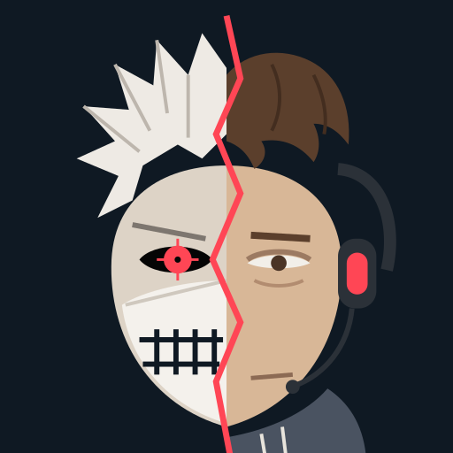
NEXTROUNDCoach Valorant gratuit
Après chaque partie, Nextround trouve ton erreur n°1 et te donne une seule mission pour la game suivante. Pendant la game, il te glisse le bon conseil au bon moment.
Nextround tourne en fond avec Overwolf. Rien à configurer.
Entre les manches, un petit conseil s’affiche dans un coin libre de l’écran.
Ton erreur n°1, ta mission, et la preuve que tu progresses à la partie suivante.
Après la game
Pas un mur de stats : Nextround cherche ce qui t’a coûté le plus de manches (premières morts, kit gardé en poche, morts jamais échangées, visée trop basse…) et te donne un objectif concret pour la partie suivante.
À la game d’après, il vérifie si tu as réussi.
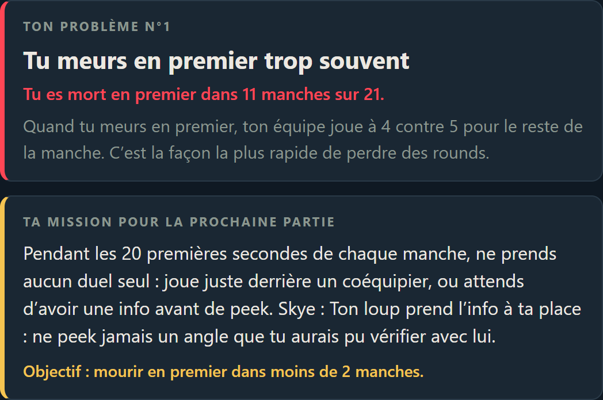
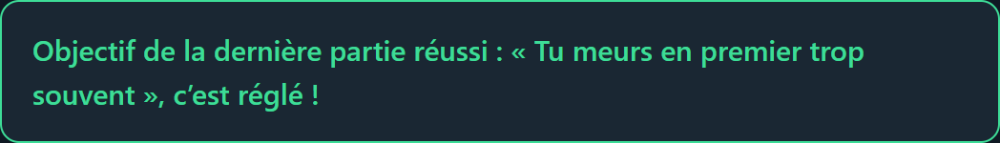
Pendant la game
Pistol perdu, équipe qui n’achète pas pareil, retake raté, post-plant perdu, série de défaites… Nextround reconnaît la situation et affiche un conseil court tiré de guides de coachs.
Uniquement quand tu es mort ou entre deux manches, jamais pendant un duel. Tu peux le déplacer ou le couper.
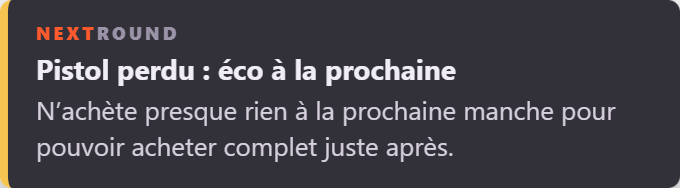
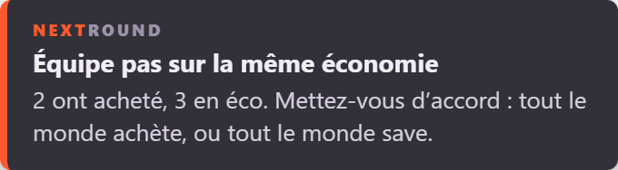
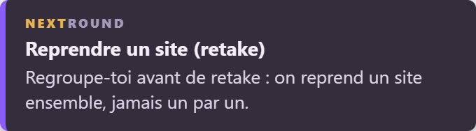
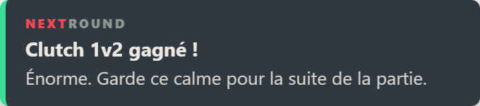
Ton niveau
Choisis ton rang dans l’appli : tes tirs à la tête sont comparés à la moyenne des joueurs de ton rang (données Tracker.gg). Tu sais enfin si ta visée te bloque vraiment.
Et chaque manche est détaillée : retakes, post-plants, pistols, écos, clutchs.
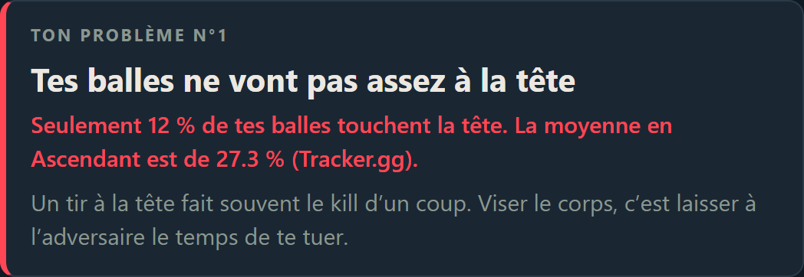
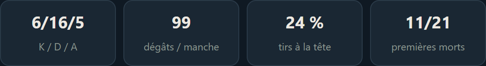
Progresser, c’est un jeu
16 badges à débloquer (Sniper, ACE, Roi du clutch, Soutien, Pilier…) et 3 défis qui changent chaque lundi, les mêmes pour tout le monde.
De quoi avoir une raison de lancer la game suivante.
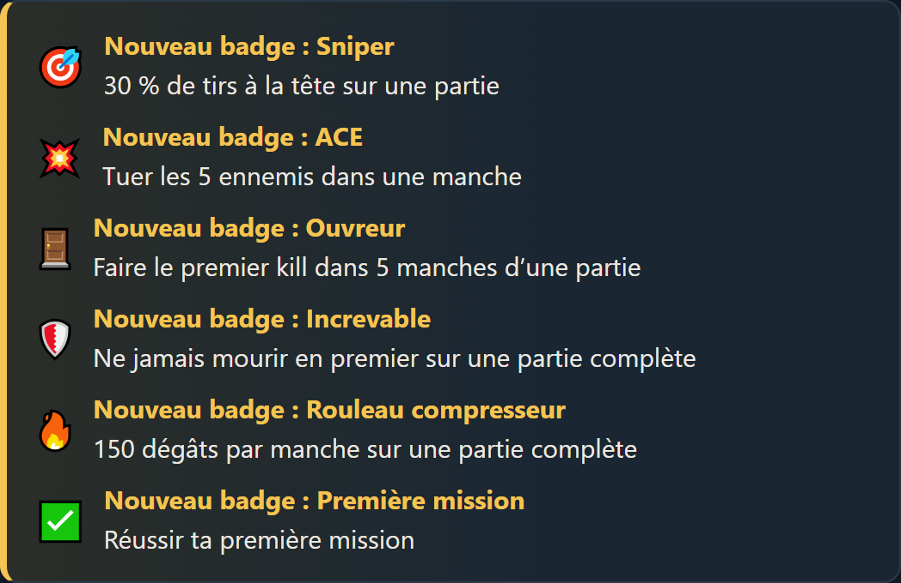
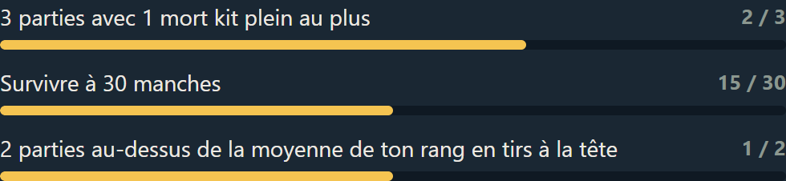
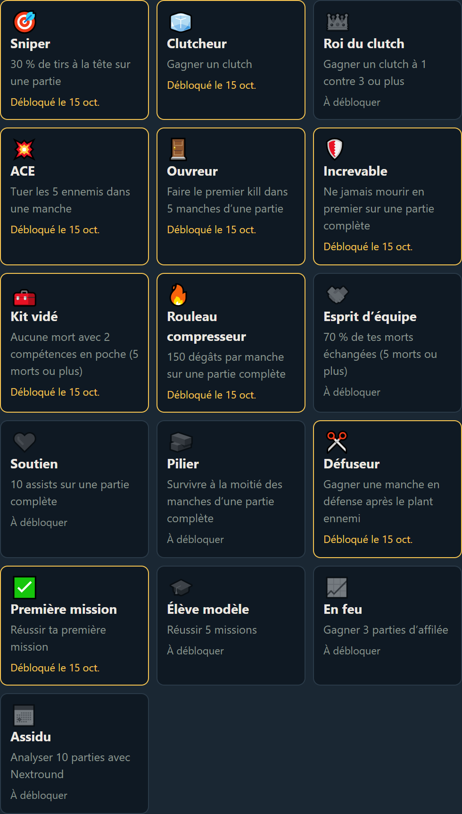
La communauté
Active le partage dans l’appli : tes badges, missions réussies et défis s’affichent sur le serveur Nextround et te rapportent des points.
Badge = 3 pts, mission réussie = 2 pts, défi terminé = 5 pts. Le podium est annoncé chaque lundi.
Plus tu réussis de missions, plus ton rôle monte :
RecrueConfirméExpertMaître Nextround
L’appli te donne un code : tape /lier sur le serveur, une seule fois. Ton pseudo Riot n’est jamais partagé.
Oui, entièrement. Nextround affiche une petite pub Overwolf dans la fenêtre du récap, c’est tout.
Nextround utilise uniquement les données de partie fournies officiellement par Overwolf. Il ne lit pas la mémoire du jeu, n’automatise rien et ne montre aucune info sur les ennemis. Il n’analyse que ce que tu as fait toi-même.
Non, Overwolf fonctionne uniquement sur PC Windows. Nextround est donc réservé à Valorant sur PC.
L’appli est en cours de validation chez Overwolf. Une bêta fermée ouvrira d’abord pour les membres du Discord inscrits à la « Liste bêta ». Rejoins le serveur pour être prévenu.
Non. Tes parties restent sur ton PC. Seul le partage sur le Discord, désactivé par défaut, envoie le pseudo que tu choisis et tes badges. Tout est expliqué dans la politique de confidentialité.
Oui ! Il y a un formulaire « Une idée ? Un bug ? » dans l’appli, et un salon dédié sur le Discord.
Rejoins le Discord et réponds « Oui » à la question sur la bêta : on te prévient dès qu’elle ouvre.
Rejoindre la bêta